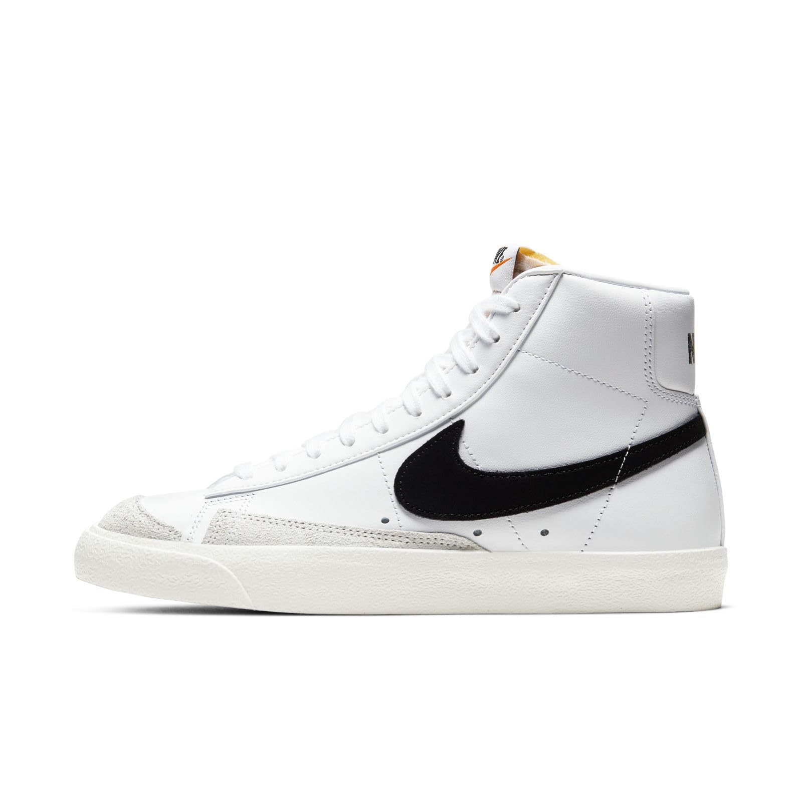
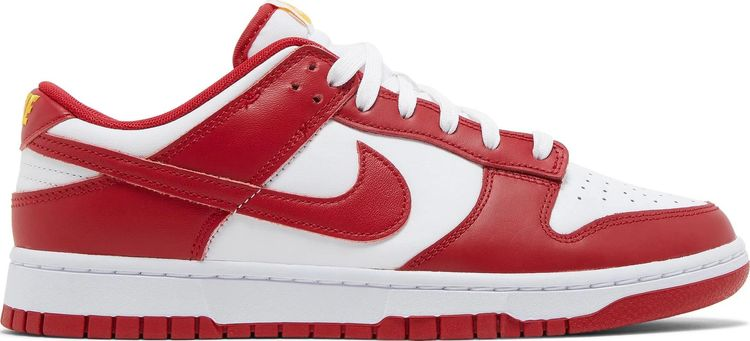
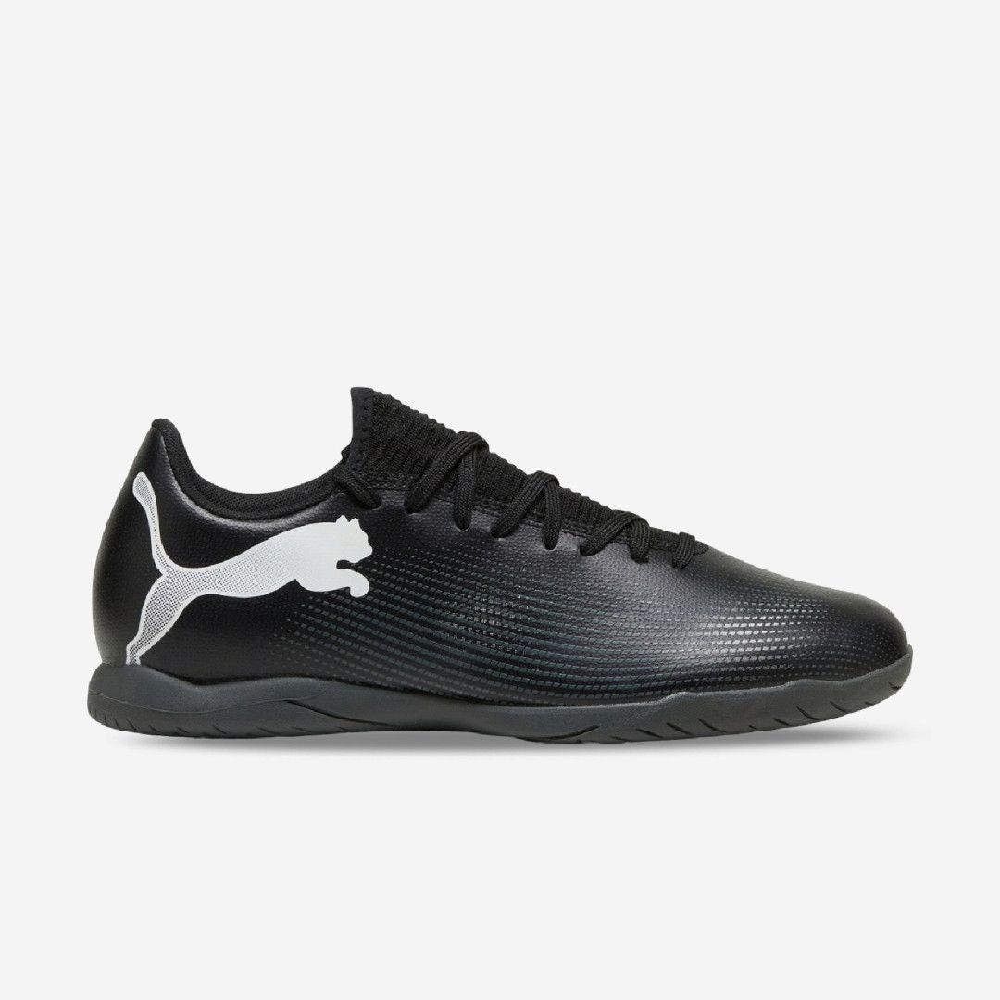
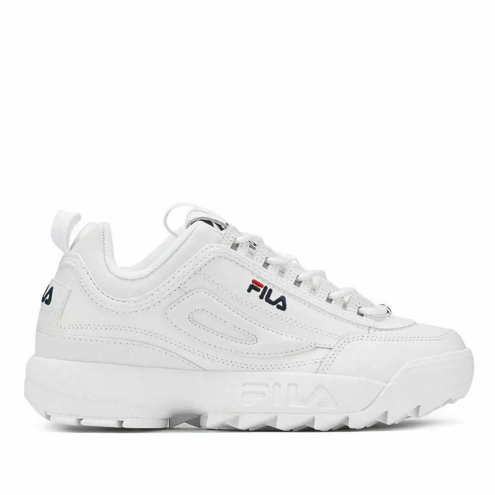
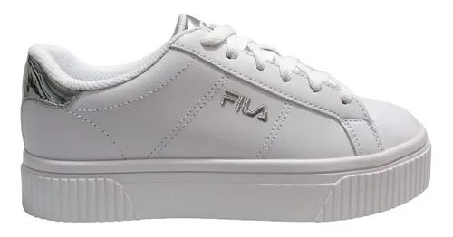
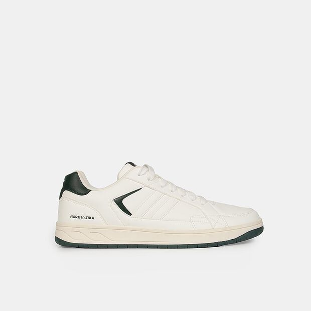
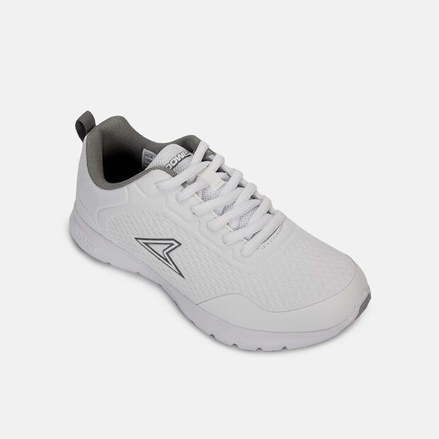

ZAPATILLAS
CATÁLOGO:
zapatillas nike
La historia de las zapatillas Nike comenzó en 1964 como Blue Ribbon Sports (BRS), fundada por Bill Bowerman y Phil Knight, que importaba y vendía zapatillas japonesas bajo la marca Onitsuka Tiger. En 1971, BRS se convirtió en Nike Inc. y lanzó sus propios diseños, con el icónico logotipo Swoosh creado por Carolyn Davidson
 Zapatillas puma
La historia de las zapatillas Puma comenzó en Alemania con los hermanos Rudolf y Adolf Dassler, quienes fundaron la fábrica de calzado "Gebrüder Dassler Schuhfabrik" en 1924. Tras una amarga separación en 1948, Rudolf fundó su propia empresa, inicialmente llamada Ruda y luego Puma, como una marca que representara la velocidad y la agilidad del felino, asociándose con atletas de élite y manteniendo su liderazgo en innovación deportiva con modelos como las Puma Suede
Zapatillas fila
Fila es una marca italiana de origen en Biella, fundada en 1911 por los hermanos Fila, inicialmente fabricando ropa interior y prendas para los Alpes italianos. La marca pasó a producir ropa deportiva y, en 1970, lanzó su línea "White Line" para el tenis, patrocinando a Björn Borg, lo que impulsó su reconocimiento. Tras pasar por diferentes propietarios, Fila Korea adquirió la marca globalmente en 2007, lo que la revitalizó y la impulsó hacia el mundo de la moda y la cultura popular, especialmente con modelos como las Fila Disruptor.
 Zapatillas bata
La historia de las zapatillas Bata comenzó en 1894 en Zlín, Checoslovaquia, cuando los hermanos Tomáš, Anna y Antonín Baťa fundaron la T. & A. Bata Shoe Company, una empresa familiar innovadora que revolucionó la fabricación de calzado al mecanizarla e introducir la producción en masa y precios accesibles. Bata se expandió globalmente, ofreciendo calzado cómodo y asequible, y aunque la marca se convirtió en un referente mundial de la industria del calzado, se hizo particularmente famosa por sus "sencillas zapatillas" para escolares indios, que se convirtieron en uno de sus productos más vendidos
 